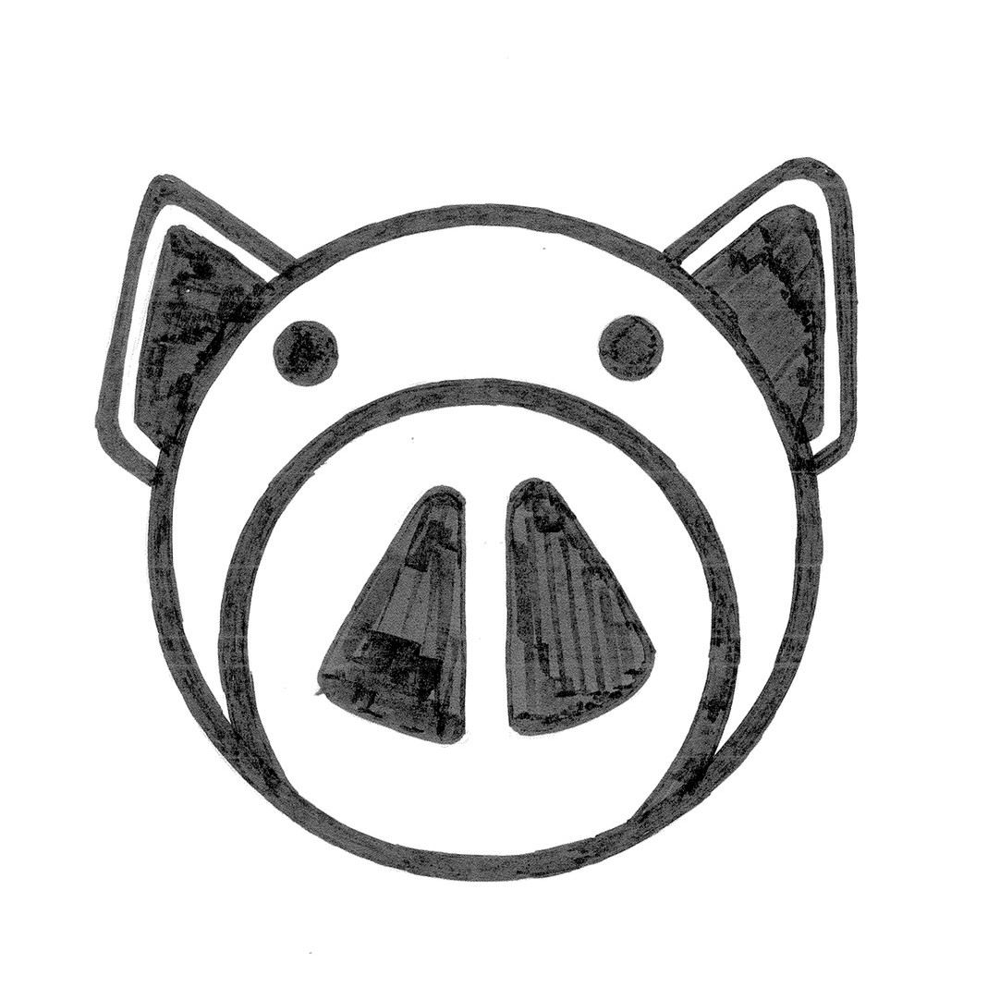
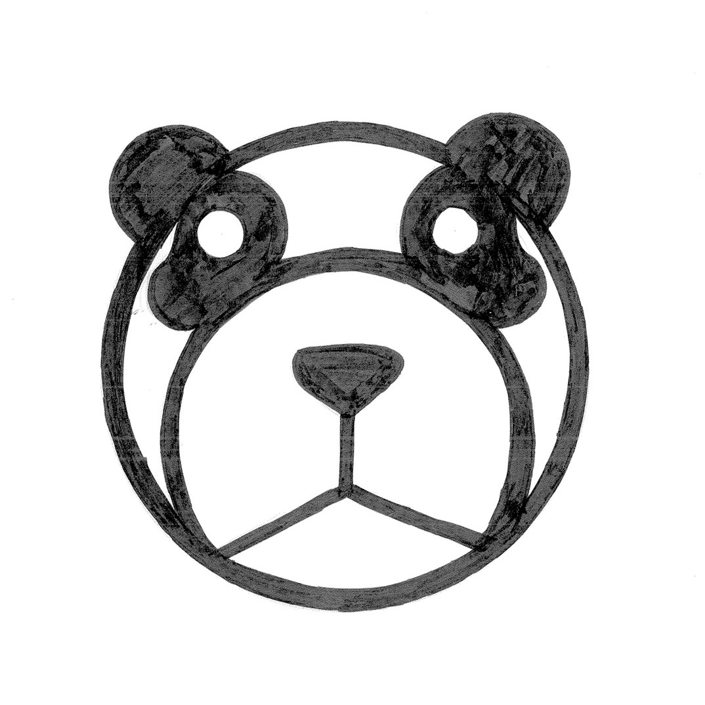
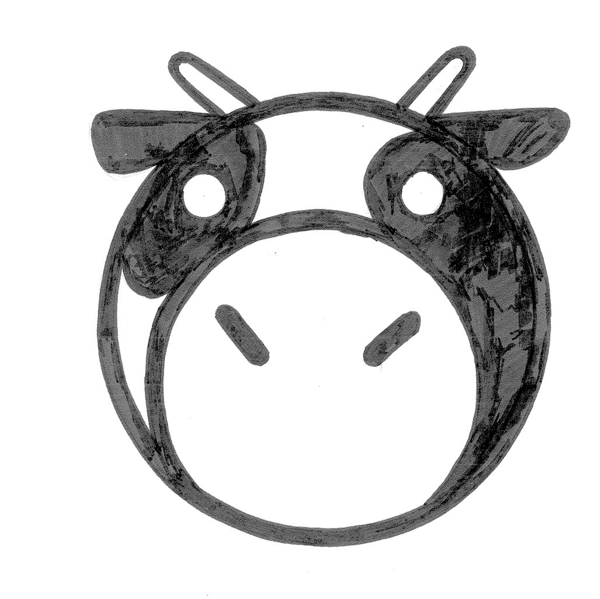
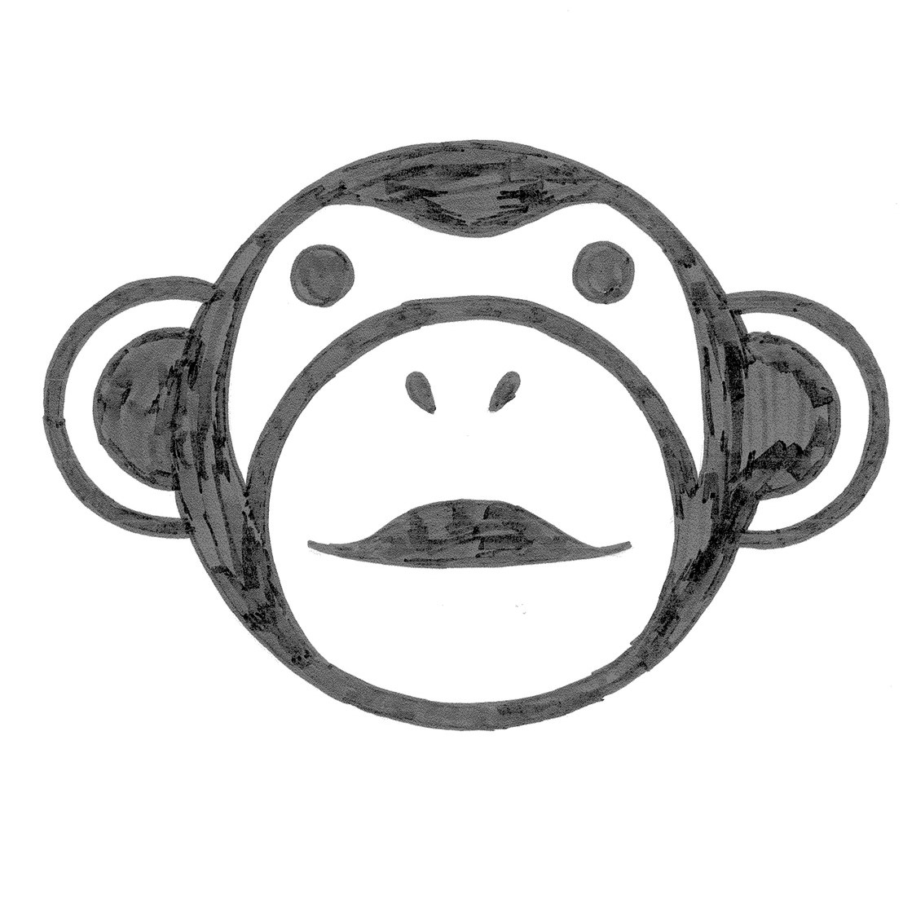
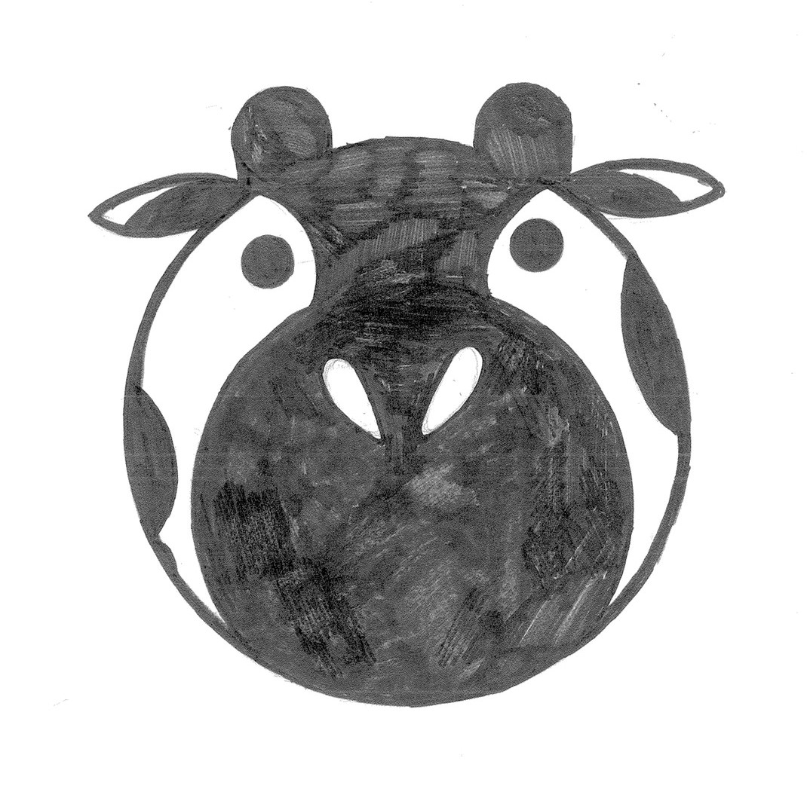
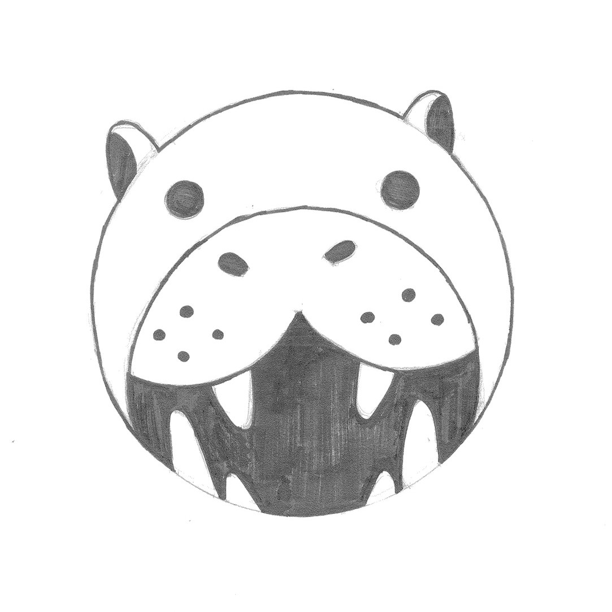
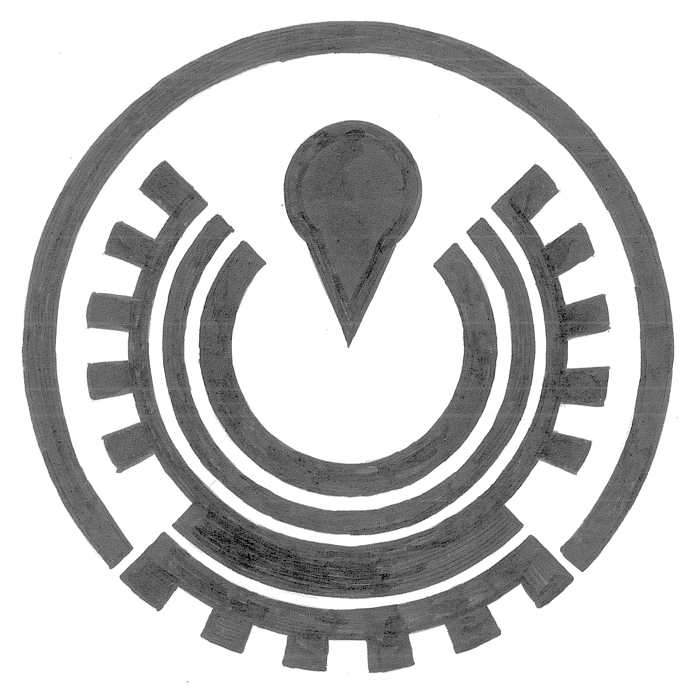
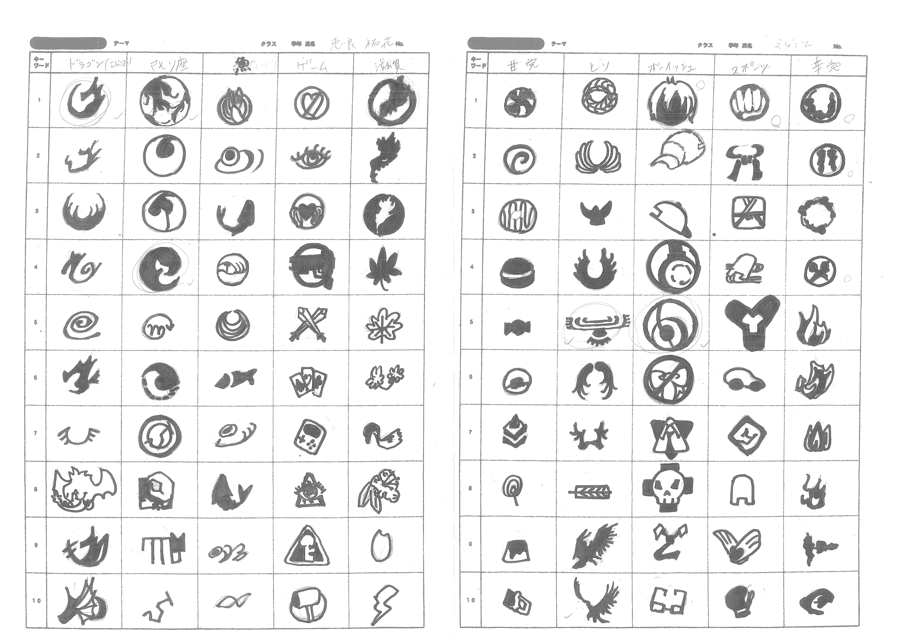
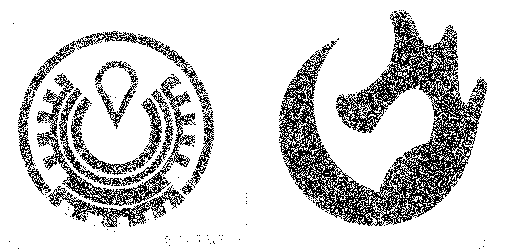

動物クロッキーを単純化シンボライズを進めて、ピクトグラム ( 絵文字 ) を制作しました。
動物の顔に着目して、マークの原型を行案しました。
統一性、審美性、独自性を加味し、
小さな子供でもわかるような可愛らしい絵文字を目指して作成しました。
制作期間：1ヶ月 キーワード 動物×ピクトグラム
    
 
この紋章は鳥、その中でも鷲が翼を広げている様子をモチーフにしたものです。
最初はナスカの地上絵をイメージして、横長の紋章を行案しましたが、
最終的に丸型の方がまとまりが良かったので、試行錯誤の末決定しました。
制作期間：1ヶ月 キーワード 紋章×ピクトグラム
痣とニックネームの「えらごん」からドラゴンを連想して、
ドラゴンのモチーフで最初は悩みました。
私の右手首には痣があり、それがちょうど鳥が翼を広げて飛んでいるように見えるので、
今回、鳥をモチーフに紋章を考えました。